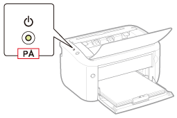
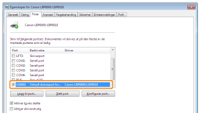
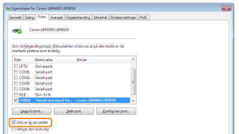

Hvis du ikke kan skrive ut når skriveren er koblet til datamaskinen din med en USB-kabel, kontroller problemet ved å følge spørsmålene nedenfor.
<Spørsmål 1> Står skriveren PÅ? (Lyser  (strømlampen)?)
(strømlampen)?)
(strømlampen)?)
|
PÅ
|
Til <Spørsmål 2>
|
|
AV
|
Skru PÅ skriveren.
|
|
Kan ikke slås PÅ
|
<Spørsmål 2> Blinker  (papirlampen)?
(papirlampen)?
(papirlampen)?
|
Blinker
|
Legg i papiret riktig, og trykk deretter på [
 ] (pairtasten). ] (pairtasten). |
|
Blinker ikke
|
Til <Spørsmål 3>
|
<Spørsmål 3> Er USB-kabelen koblet til skikkelig?

|
Tilkoblet
|
Prøv følgende punkt.
Hvis du bruker en hub, koble skriveren direkte til datamaskinen.
Hvis du bruker en lang USB-kabel, bytt den ut med en kort kabel.
Hvis du har en annen USB-kabel, bruk den.
 Hvis utskrift ikke utføres, gå til <Spørsmål 4>. |
|
Ikke tilkoblet
|
Koble kabelen skikkelig til.
|
<Spørsmål 4> Kan du skrive ut en testside i Windows?
|
Kan skrives ut
|
Det er ikke noen problemer med skriveren og driveren.
Kontroller skriverinnstillingene i programmet.
|
|
Kan ikke skrives ut
|
Til <Spørsmål 5>
|
<Spørsmål 5> Er porten som skal brukes valgt skikkelig?

|
Valgt
|
Til <Spørsmål 6>
|
|
Ikke valgt
|
Velg den korrekte porten.
|
|
Finner ikke porten som skal brukes.
|
Installer skriverdriveren igjen.
|
<Spørsmål 6> Er toveis kommunikasjon aktivert?

|
Aktivert
|
Til <Spørsmål 7>
|
|
Ikke aktivert
|
Aktiver toveis kommunikasjon og start datamaskinen og skriveren på nytt.
|
<Spørsmål 7> Prøv de følgende punktene.
Gjør lagringsfast programvare ugyldig inklusiv sikkerhetsprogramvare.
Hvis noen andre enheter er koblet til datamaskinen din med USB-tilkobling, koble fra de som kan unnværes.
Hvis drivere eller programvare til andre enheter (USB-tilkobling) er installert på datamaskinen din, avinstaller de som kan unnværes.
Koble USB-kabelen til en annen USB-port på datamaskinen din.
Koble skriveren til en annen datamaskin med en USB-kabel.
Hvis det ikke fungerer å skrive ut, fortsett til <Spørsmål 8>.
<Spørsmål 8> Installer skriverdriveren igjen.
Hvis det ikke fungerer å skrive ut, fortsett til <Spørsmål 9>.
<Spørsmål 9> Avinstaller USB-klassedriveren, og installer deretter skriverdriveren igjen.
Uansett, hvis det ikke fungerer å skrive ut, kontakt din lokale autoriserte Canon-forhandler.